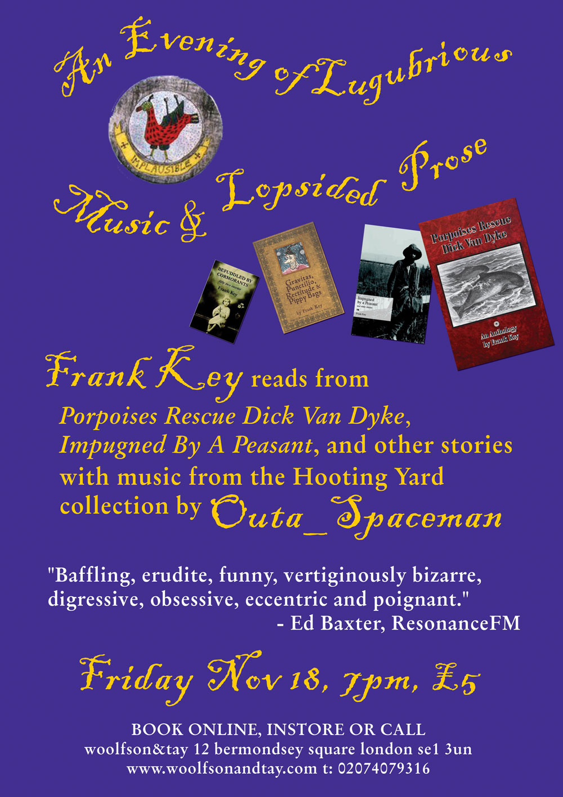

Monday, October the 3rd, 2011
back to: title, date or indexes

It's unmissable! For one night only, Frank Key declaims his stories to a live audience, accompanied by the legendary Outa_Spaceman singing selections from the Hooting Yard songbook and his own compositions.
Friday 18 November · 19:00—22:00
Woolfson & Tay. Books. Café. Gallery.
12 Bermondsey Square
London SE1 3UN
A snip at a mere fiver! Bring your extended family, and spread the word (to avert the exquisite horror of nobody actually turning up…)
To book your place, go here